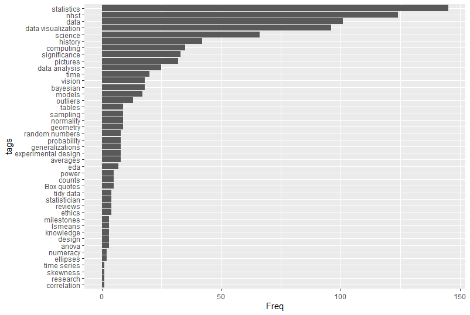
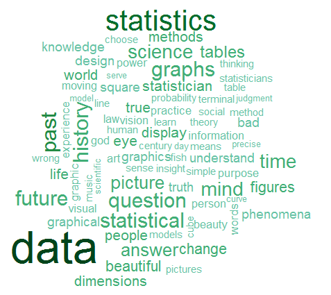

Quotes on statistics, data visualization and science
This package displays a randomly chosen quotation about topics related to statistics, data visualization and science, or can be used to search for quotes within the statquotes database for key term tags or authors.
The original idea came from the Unix fortune program, used to display a “fortune” at startup and contained some bits of wisdom, together with obscure jokes about computer science and computer programming.
The fortunes package is focused on quotes about R, largely gleaned from the R-help mailing list, and collected in a vignette.
The statquotes package is focused on quotes about data analysis, visualization and science. It can be used to find quotes when writing about these topics.
In this R package,
- each call to
statquote()displays a randomly selected quotation, or, - via
search_quotes()restricted to those whosetagsfield matches thetagargument, or whosesourcefield matches thesource=argument.
Quotes can be displayed in the R console, or formatted as markdown or LaTeX (for use with the epigraph package).
Installation
The released CRAN version can be installed via:
install.packages("statquotes")The development version can be installed via:
devtools::install_github("friendly/statquotes")Please report any problems or bugs at https://github.com/friendly/statquotes/issues.
Examples
> library(statquotes)
> statquote()
The best thing about being a statistician is that you get to play in everyone's backyard.
--- John W. Tukey
> statquote("boggle") # or statquote(pattern="boggle")
The statistician has no magic touch by which he may come in at the stage of
tabulation and make something of nothing. Neither will his advice, however wise in
the early stages of a study, ensure successful execution and conclusion. Many a
study, launched on the ways of elegant statistical design, later boggled in
execution, ends up with results to which the theory of probability can contribute
little.
--- W. Edwards Deming, Principles of Professional Statistical Practice. Annals of
Mathematical Statistics, 36(6), 1883. (1965)
> statquote(source="Tukey") # Choose a random quote from a specific author
Whatever the data, we can try to gain understanding by straightening or by flattening. When we
succeed in doing one or both, we almost always see more clearly what is going on.
--- John Tukey, Exploratory Data Analysis, p. 148.
> quote_tags() # list all tags
[1] "anova" "assumptions" "averages" "bayesian"
[5] "biometry" "Box quotes" "computing" "correlation"
[9] "counts" "data" "data analysis" "data visualization"
[13] "design" "eda" "ellipses" "ethics"
[17] "experimental design" "expt design" "generalizations" "geometry"
[21] "history" "knowledge" "lsmeans" "milestones"
[25] "models" "nhst" "normality" "numeracy"
[29] "outliers" "p-values" "pictures" "power"
[33] "probability" "random numbers" "research" "reviews"
[37] "sample size" "sampling" "science" "significance"
[41] "skewness" "statistician" "statisticians" "statistics"
[45] "tables" "teaching" "tidy data" "time"
[49] "time series" "uncertainty" "vision"
> statquote(tag="numeracy") # choose a random quote with a specific tag
To be numerate means to be competent, confident, and comfortable with one’s judgements on whether
to use mathematics in a particular situation and if so, what mathematics to use, how to do it,
what degree of accuracy is appropriate, and what the answer means in relation to the context.
--- Diana Coben, Numeracy, mathematics and adult learning, 2000
# To find all quotes with a particular word:
> search_quotes("lsmeans")
Some of us feel that type III sum of squares and so-called LS-means are statistical
nonsense which should have been left in SAS.
--- Brian Ripley, Discussing features of S-Plus, S-news 5.29.1999
I think it would be interesting to ask people who use the results from LSMEANS to explain
what the results represent. My guess is that less than 1% of the people who use LSMEANS
know what they in fact are.
--- Doug Bates, R-help mailing list, 16 Oct 2003Output formats
Quotes have class "statquote". The print.statquote() method gives a plain text format for the console. This method has an argument, cite = TRUE, which appends the citation information to the source.
R> statquote("eulogy")
One is so much less than two. [John Tukey's eulogy of his wife.]
--- John Tukey, The life and professional contributions of John W. Tukey, The Annals of
Statistics, 2001, Vol 30, p. 46.Use as.markdown() for markdown-formatted quotes:
R> cat(as.markdown(statquote("eulogy")))
> *One is so much less than two. [John Tukey's eulogy of his wife.]* -- John Tukey, The life and professional contributions of John W. Tukey, The Annals of Statistics, 2001, Vol 30, p. 46.Use as.latex() for Latex-formatted quotes (for the epigraph package):
R> cat(as.latex(statquote("eulogy")))
\epigraph{One is so much less than two. [John Tukey's eulogy of his wife.]}{John Tukey, The life and professional contributions of John W. Tukey, The Annals of Statistics, 2001, Vol 30, p. 46.}Use as.data.frame() to see unformatted quotes:
R> as.data.frame(statquote("eulogy"))
qid text source
411 411 One is so much less than two. [John Tukey's eulogy of his wife.] John Tukey
cite
411 The life and professional contributions of John W. Tukey, The Annals of Statistics, 2001, Vol 30, p. 46.
url tags tex
411 <NA> statistics <NA>Tags
One or more keyword tags are used to classify quotes in the quotes database. These provide another means of searching. The code below produces a bar plot of tags, sorted by frequency.
library(ggplot2)
qt <- quote_tags(table=TRUE)
qtdf <-as.data.frame(qt)
# Sort tags by frequency
qtdf |>
dplyr::mutate(tags = forcats::fct_reorder(tags, Freq)) |>
ggplot2::ggplot(aes(x=Freq, y=tags)) +
geom_bar(stat = "identity")
Quote clouds
quote_cloud() generates a word cloud based upon a search of the quotes database.
#quote_cloud("bayes")
quote_cloud()
Quote of the day
To have statquotes give you an inspirational quote of the day each time you start R, edit your .Rprofile file:
# Edit .Rprofile in home directory
file.edit(file.path("~", ".Rprofile"))Add this line to the bottom of .Rprofile, then save and close .Rprofile.
if(interactive()) statquotes::statquote()